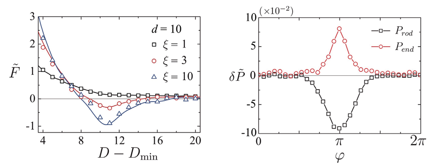

Report by Subjects
Report by Subjects
KAIST RESEARCH ACHIEVEMENTS
Role of Rodlike Counterions on the Interactions of DNAs
Graduate School of Nanoscience and Technology
Yong Woon Kim
Summary
It was recently discovered that polyamines of extended rodlike structures such as spermine and spermidine induce attractions and are super-efficient bundling agents for a variety of charged biopolymers. According to the Poisson-Boltzmann theory, which has been used to describe such ionic solutions for more than a hundred years, like-charged polymers are predicted to repel each other. Recently, theoretical physicists at KAIST resolved this discrepancy and demonstrated that, by taking into account the rodlike structures of ions, the interaction between like-charged polymers becomes attractive with distinctive sensitivity to the curvature of the charged surface and the size of the rodlike ions. This result advances our understanding of charged biological systems at a fundamental level, and explains why rodlike polyamines are efficient condensation agents of various biopolymers such as microtubules and DNAs in physiological conditions.
Background
Rigid charged biopolymers such as DNA, microtubules, and actin have received great attention in biology as they form characteristic self-assembly structures and are involved in various biological functions in a cell. It has been a long-standing puzzle to physicists as well as biologists how like-charged polymers overcome electrostatic repulsion to exhibit condensed phases, leading to the self-assembly structures in equilibrium. According to the Poisson-Boltzmann theory, which has successfully described the equilibrium phases of such ionic solutions for more than a century, like-charged polymers always repel. The self-assembly of polyelectrolytes, which implies the existence of attractive interactions, has thus been recognized as a major puzzle in the field of soft condensed matter physics.
The current understanding of like-charge attraction is as follows. In a cell, there exists a multitude of multivalent counterions that exhibit strong electrostatic correlations and fluctuations that cannot be understood by the mean-field Poisson-Boltzmann theory. Then the strong correlations and fluctuations would lead to attractions between like-charged macroions. At a glance, this picture seems satisfactory as it seems to explain the apparent contradiction of experimental observations to the prediction of the Poisson-Boltzmann theory. However, it is well-known that monovalent salts that are abundant in a cell render the electrostatic correlations negligible and the Poisson-Boltzmann theory valid under physiological conditions. This study was motivated by the lack of a comprehensive picture on how like-charged polymers are able to experience attractions under physiological conditions in which the mean-field theory becomes valid. A theoretical research group led by Prof. Yong Woon Kim focused on interesting experimental observations in which polyamines, like spermines and spermidines, are effective condensation agents to induce bundle formations of various biopolymers in vivo. Polyamines have extended rodlike structures with well-separated charge distributions along the backbone, and thus the validity of the point-particle assumption of mobile ions usually adopted in the Poisson- Fig. 1. Rigid charged polymers in the presence of rodlike counterions Boltzmann theory becomes questionable.
 Fig. 1. Rigid charged polymers in the presence of rodlike counterions
Fig. 1. Rigid charged polymers in the presence of rodlike counterions
In this study, Monte-Carlo simulations were performed to systematically study the interactions of charged biopolymers in the presence of rodlike counterions in solutions (Fig. 1). For the first time, it was discovered that even within the mean-field regime, like-charged polymers were attracted to each other as the size of the rodlike counterions increases (Fig. 2, left panel). It was also demonstrated that this attraction is due to anisotropic osmotic pressure distributions around the charged polymers, which originates from perpendicularly-oriented rodlike counterions that form bridging configurations in the intervening space between polymers (Fig. 2, right panel).

Fig. 2. Inter-polymer forces (left panel)
and osmotic pressures around a charged polymer
Expected effect
This study provides direct evidence that the rodlike structures of counterions and anisotropic osmotic pressure could be critical in understanding the correct phase behaviors of rigid polyelectrolytes. In particular, the research team discovered, for the first time, the physical mechanism that explains why small amounts of polyamines are important in the formation of the condensed phases of biopolymers under physiological conditions. The results of this study are expected to play a pivoting role for future experimental studies on the control of the self-assembly of polyelectrolytes using polyamine ions. In addition, this is the systematic study to take into account the internal structures of counterions beyond the conventional point-particle approximation used in the Poisson-Boltzmann theory, and thus is expected to act as a cornerstone for future theoretical studies.
Research Outcomes
[Paper] M. Cha, S. Ro, and Y. W. Kim*, “Rodlike counterions near charged cylinders: counterion condensation and inter-cylinder interaction”, Phys. Rev. Lett. 121, 058001 (2018)
Research Funding
This research was supported by a National Research Foundation of Korea (NRF) grant funded by the Korean government (Grant No. NRF-2017R1A2B4007608)